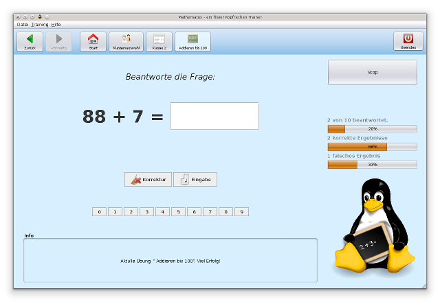

Mathematux ist ein freier Kofprechentrainer für Schüler und Schulen, der auf allen gängigen Betriebssystemen läuft.
{kind=link}
Ziel des Projekts
Mathematux hat das Ziel eine Mathematik-Lernsoftware zu bilden, die
- das Kopfrechnen trainiert
- unter einer freien Lizenz (der GPLv3) steht
- plattformunabhängig ist
- pädagogische Aspekte berücksichtigt
- eine möglichst umfangreiche Themenvielfalt enthält
- für den Einsatz in deutschen Grundschulen geeignet ist.
Zielgruppe
Die Zielgruppe dieses Projekts sind alle Menschen, die Schwächen in der Mathematik haben oder ihre bereits erlernten Fähigkeiten verbessern möchten. Der Fokus liegt insbesondere bei jungen Schülern im Alter von 6 bis 12 Jahren, die das im Unterricht Erlernte üben wollen. Kinder im Vorschulalter können die Software selbstverständlich auch nutzen, sollten jedoch das Lernen mit einer Person dringend vorziehen. Das Kopfrechnen soll in diesem Projekt im Vordergrund stehen.
Abgrenzung
Das Projekt erhebt nicht den Anspruch sämtliche Themengebiete der deutschen Lehrpläne abzudecken. Mathematux soll ausdrücklich kein Ersatz für Leher und Betreuer sein. Jegliche Themen, die in der Mathematik schriftlich zu erarbeiten sind, können und sollen hier nicht mit erlernt oder geübt werden. Das Erlernen der einzelnen Fähigkeiten sollte mit dem Lehrer geschehen, lediglich das Üben soll mit Mathematux erfolgen.
Entwicklung
Das Projekt wird seit 2009 nicht mehr weiter entwickelt.